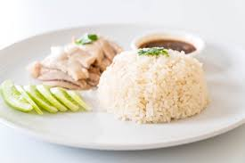

Back to Home
Hainanese Chicken Rice

Description
Hainanese Chicken Rice is one of Singapore's most iconic dishes. Tender poached chicken is served alongside fragrant rice cooked in chicken broth, with chilli sauce and ginger paste on the side.
It looks simple but the depth of flavour in every component is what makes it truly special. Once you try making it at home, you will understand why it is a national favourite.
Ingredients
- 1 whole chicken (about 1.5kg)
- 4 cloves garlic
- 1 knob of ginger, sliced
- 3 stalks spring onion
- 1 tablespoon sesame oil
- Salt to taste
- 2 cups jasmine rice
- 3 cloves garlic, minced (for rice)
- 1 knob ginger, minced (for rice)
- 2 tablespoons chicken fat or oil
- 3 cups chicken broth (from poaching)
- Cucumber and tomato for serving
- Chilli sauce and ginger paste for serving
Steps
- Rub the chicken with salt inside and out. Stuff the cavity with garlic, ginger, and spring onion.
- Bring a large pot of water to boil. Submerge the chicken and poach on low heat for 45 minutes.
- Remove chicken and immediately submerge in ice water for 10 minutes to keep the skin smooth.
- Reserve the poaching broth for cooking the rice and soup.
- In a pan, fry minced garlic and ginger in chicken fat until fragrant.
- Add washed rice and stir to coat. Transfer to a rice cooker.
- Add 3 cups of chicken broth instead of water and cook as normal.
- Rub the chicken with sesame oil and chop into serving pieces.
- Serve chicken over rice with cucumber, tomato, chilli sauce, and ginger paste on the side.